The purpose of this tutorial is to discuss the use of compressible and incompressible constitutive equations for solid mechanics problems. As discussed in the Solid Mechanics Theory Tutorial, problems in which the solid is truly incompressible require a solution based on the pressure/displacement formulation of the principle of virtual displacements (PVD). Mathematically, this is because the pressure acts as the Lagrange multiplier that enforces incompressibility. The pressure/displacement form of the PVD may be discretised with finite elements that employ continuous (e.g. Taylor-Hood-type) or discontinuous (e.g. Crouzeix-Raviart-type) elements.
Some constitutive equations allow for compressible and incompressible behaviour, depending on their parameters. Problems involving such constitutive equations may be solved with large number of formulations. As an example, consider oomph-lib's generalised Hookean constitutive equation (see the disclaimer below).
I. The displacement form
oomph-lib's generalised Hookean constitutive law assumes that the 2nd Piola Kirchhoff stress 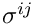 (non-dimensionalised on Young's modulus  ) is related to Green's strain tensor 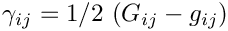 via
) is related to Green's strain tensor 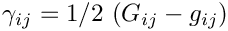 via
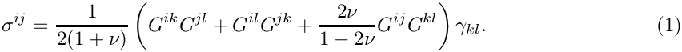
Here  and
and  are the metric tensors associated with the undeformed and deformed configurations. This constitutive law reduces to the the classical version of Hooke's law for small strains when
are the metric tensors associated with the undeformed and deformed configurations. This constitutive law reduces to the the classical version of Hooke's law for small strains when  In the above form, the constitutive law can be used directly in the displacement-based form of the PVD, unless 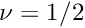 – the case that corresponds to incompressible behaviour in the small-displacement regime. (While the above formulation only breaks down completely when 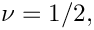 numerical solutions based on the above form of the constitutive equation become badly-behaved as
In the above form, the constitutive law can be used directly in the displacement-based form of the PVD, unless 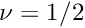 – the case that corresponds to incompressible behaviour in the small-displacement regime. (While the above formulation only breaks down completely when 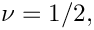 numerical solutions based on the above form of the constitutive equation become badly-behaved as  approaches that value.)
approaches that value.)
II. The pressure-displacement form for compressible and incompressible behaviour
To avoid the problems that arise as  the constitutive equation may be rewritten in the form
the constitutive equation may be rewritten in the form
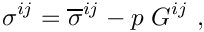
where the deviatoric stress is given by
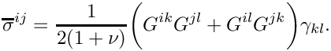
To remain consistent with (1), the pressure  must then be determined via the equation
must then be determined via the equation
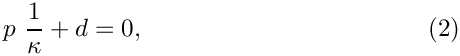
where
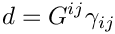
is the generalised dilatation (which reduces to the actual dilatation in the small-strain limit). The inverse bulk modulus is defined as
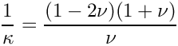
and tends to zero as 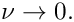 The alternative form of the constitutive equation can therefore be used for any value of . If the constraint (2) enforces 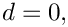 i.e incompressible behaviour (at least in the small displacement regime – for large deflections the constraint (2) simply ensures that the generalised dilatation vanishes; this may not be a physically meaningful constraint).
III. Truly incompressible behaviour
Finally, we may retain the decomposition of the stress into its deviatoric and non-deviatoric parts but determine the pressure from the actual incompressibility constraint, i.e. replace (2) by
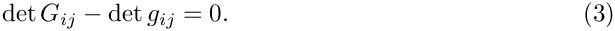
In this case, the deviatoric part of the stress is determined by the material's constitutive parameters, i.e. its Young's modulus and its Poisson ratio while the pressure (acting as the Lagrange multiplier for the constraint (3)) enforces true incompressibility.
| to a value that differs from 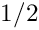 while enforcing true incompressibility via formulation III would be extremely odd. Furthermore, it is not clear (to us) if our generalisation of Hooke's law (obtained by replacing the undeformed metric tensor by its deformed counterpart yields a constitutive equation that is particularly useful for any specific material. However, the same is true for any other constitutive equation – not all of them are useful for all materials! The important point is that all constitutive equations that allow for compressible and incompressible behaviour contain combinations of constitutive parameters that blow up as incompressibility is approached. Formulation II shows how to express such constitutive laws in a way that can be used for any value of the constitutive parameters. |
With this disclaimer in mind, we will now demonstrate the use of the various combinations outlined above in a simple test problem for which an exact (linearised) solution is available.
The problem
Here is a sketch of the problem: Three faces of a square elastic body are surrounded by "slippery" rigid walls that allow the body to slide freely along them. The body is subject to a vertical, gravitational body force, acting in the negative 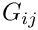 -direction.
We choose the height of the square as the reference length for the non-dimensionalisation by setting 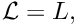 and use the characteristic stiffness associated with the body's constitutive equation to scale the stresses and the body forces. For instance, for linear elastic behaviour, we choose the reference stress to be the solid's Young's modulus, thus setting 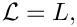 The non-dimensional body force is then given by 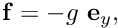 where
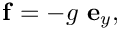
indicates the magnitude of the gravitational load relative to the body's stiffness; see the Solid Mechanics Theory Tutorial for full details on the non-dimensionalisation of the governing equations.
An exact solution
Assuming weak loading, i.e. 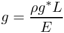, the body will undergo small deflections and its deformation will be governed by the equations of linear elasticity. Given that the walls bounding the solid are slippery, it is easy to show that a displacement field has the form 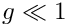. Inserting this ansatz into the Navier-Lame equations shows that the non-dimensional displacement in the vertical direction is given by
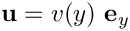
The stresses are given by
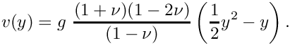
This shows that, as the solid approaches incompressibility, the displacements are suppressed and the stress distribution becomes hydrostatic with 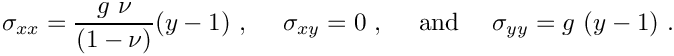
Results
Here is a plot of the three non-zero quantities (the vertical displacement 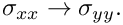, and the horizontal and vertical stresses, 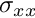 and  , respectively) for 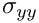 and 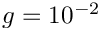 The shaded surface shows the exact solution while the mesh shows the finite element solution obtained with the displacement formulation of the problem. The solutions obtained with formulations II and III are graphically indistinguishable. All other quantities (the transverse displacement and the shear stress 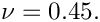) are of order 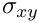
, respectively) for 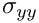 and 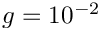 The shaded surface shows the exact solution while the mesh shows the finite element solution obtained with the displacement formulation of the problem. The solutions obtained with formulations II and III are graphically indistinguishable. All other quantities (the transverse displacement and the shear stress 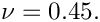) are of order 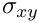
The driver code listed below also computes solutions for various other values of (including the incompressible case  ), and demonstrates how to enforce "true" incompressibility via formulation III. Furthermore, it computes a solution based on the incompressible Mooney-Rivlin constitutive law. The agreement between analytical and computed results is as good as the one shown in the above plot. In particular in all cases where incompressibility is enforced, the vertical displacement is suppressed and the stress state becomes hydrostatic, as predicted by the analytical solution.
), and demonstrates how to enforce "true" incompressibility via formulation III. Furthermore, it computes a solution based on the incompressible Mooney-Rivlin constitutive law. The agreement between analytical and computed results is as good as the one shown in the above plot. In particular in all cases where incompressibility is enforced, the vertical displacement is suppressed and the stress state becomes hydrostatic, as predicted by the analytical solution.
Modifying the element's output function
Since we wish to compare the stresses and displacements against the analytical solution, we modify the SolidElement's output function by means of a wrapper class that overloads the SolidElement::output(...).
Problem Parameters
As usual we define the various problem parameters in a global namespace. We prepare a pointer to a constitutive equation and define Poisson's ratio for use with the generalised Hookean constitutive law.
We also prepare a pointer to a strain energy function and define the coefficients for the Mooney Rivlin law:
Finally, we define the gravitational body force.
The driver code
The driver code solves the problem with a large number of different formulations and constitutive equations. We start with the generalised Hookean constitutive equation and consider three different values of Poisson's ratio, corresponding to compressible, near-incompressible and incompressible behaviour:
First, we solve the problem in the pure displacement formulation, using (the wrapped version of the) displacement-based QPVDElements. (As discussed above, the displacement formulation cannot be used for .)
Next we consider the pressure/displacement formulation with continuous pressures (Taylor-Hood), using the
QPVDElementWithContinuousPressure element.
We suppress the listing of the remaining combinations (see the driver code compressed_square.cc for details):
- Pressure/displacement formulation with discontinuous pressures (Crouzeix-Raviart), using the
QPVDElementWithPressureelement. - Pressure/displacement formulation with continuous pressures (Taylor-Hood), using the
QPVDElementWithContinuousPressureelement, with true incompressibility enforced via formulation III. - Pressure/displacement formulation with discontinuous pressures (Crouzeix-Raviart), using the
QPVDElementWithPressureelement, with true incompressibility enforced via formulation III.
Before the end of the loop over the different values we delete the constitutive equation, allowing it to be re-built with a different Poisson ratio.
Next we build the strain-energy-based Mooney-Rivlin constitutive law
and solve the problem with QPVDElementWithContinuousPressure and QPVDElementWithPressure elements, enforcing true incompressibility enforced via formulation III by setting the incompressible flag to true.
The Problem class
The Problem class has the usual member functions. The i_case label is used to distinguish different cases while the boolean incompressible indicates if we wish to enforce incompressibility via formulation III.
The Problem constructor
We start by building the mesh – the SolidMesh version of the ElasticRectangularQuadMesh.
We complete the build of the elements by specifying the constitutive equation and the gravitational body force.
If the element is based on the pressure/displacement form of the principle of virtual displacements we enforce (true) incompressibility if required. Note that, by default, oomph-lib's pressure/displacement-based solid mechanics elements do not assume incompressibility, i.e. the default is to use formulation II.
Finally, we pick a control node to document the solid's load-displacement characteristics and apply the boundary conditions (no displacements normal to the "slippery" walls) before setting up the equation numbering scheme.
Post-processing
The post-processing routine documents the load-displacement characteristics in a trace file and outputs the deformed domain shape.
We then output the exact solution of the linearised equations using the same format as in the element's overloaded output function.
Comments and Exercises
As usual, oomph-lib provides self-tests that assess if the enforcement incompressibility (or the lack thereof) is consistent:
- The compiler will not allow the user to enforce incompressibility on elements that are based on the displacement form of the principle of virtual displacements. This is because the displacement-based elements do not have a member function
incompressible().
- Certain constitutive laws, such as the Mooney-Rivlin law used in the present example require an incompressible formulation. If
oomph-libis compiled with thePARANOIDflag, an error is thrown if such a constitutive law is used by an element for which incompressibility has not been requested.
Recall that the default setting is not to enforce incompressibility!
If the library is compiled without thePARANOIDflag no warning will be issued but the results will be "wrong" at least in the sense that the material does not behave like an incompressible Mooney-Rivlin solid. In fact, it is likely that the Newton solver will diverge. Anyway, as we keep saying, without thePARANOIDflag, you're on your own!
You should experiment with different combinations of constitutive laws and element types to familiarise yourself with these issues.
Source files for this tutorial
- The source files for this tutorial are located in the directory:
demo_drivers/solid/compressed_square/
- The driver code is:
demo_drivers/solid/compressed_square/compressed_square.cc
PDF file
A pdf version of this document is available.